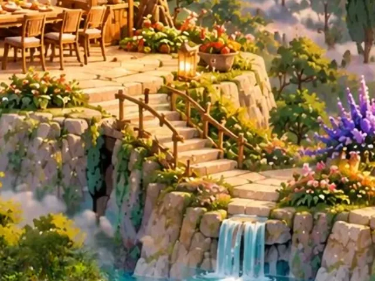
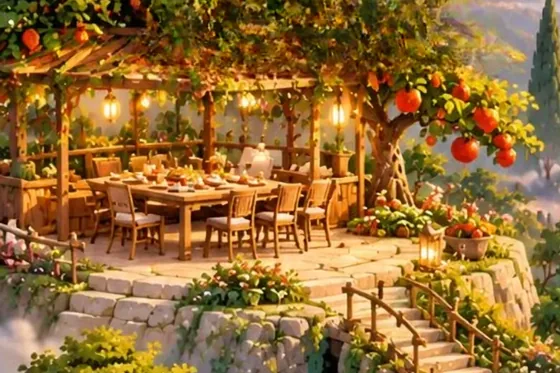
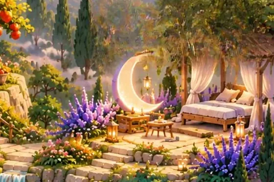
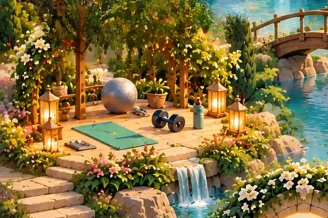
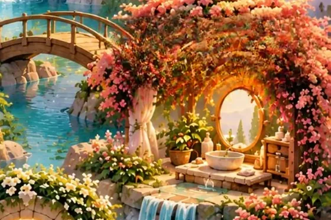
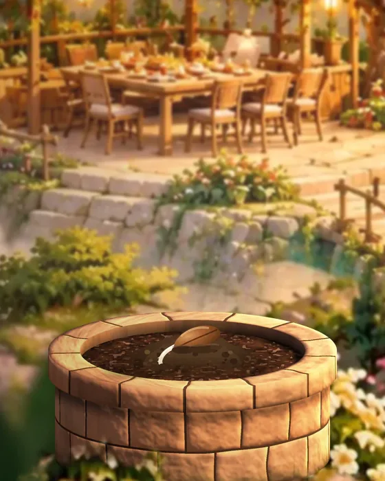
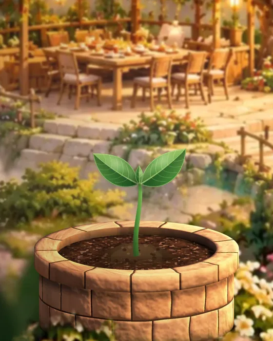
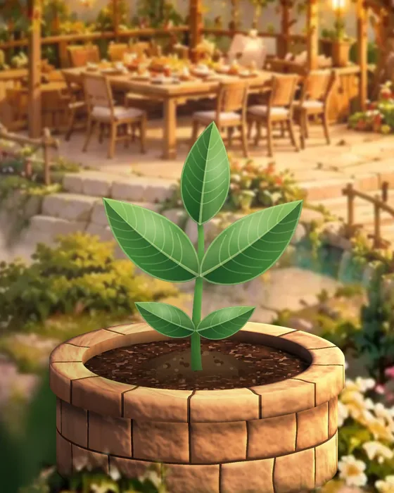
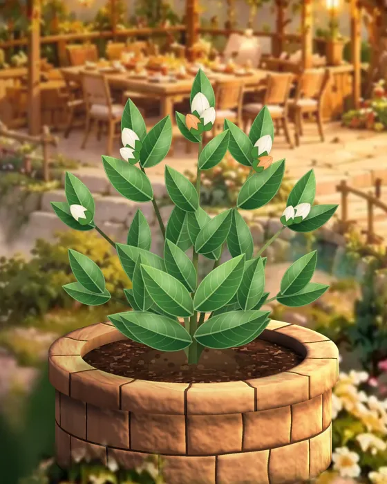
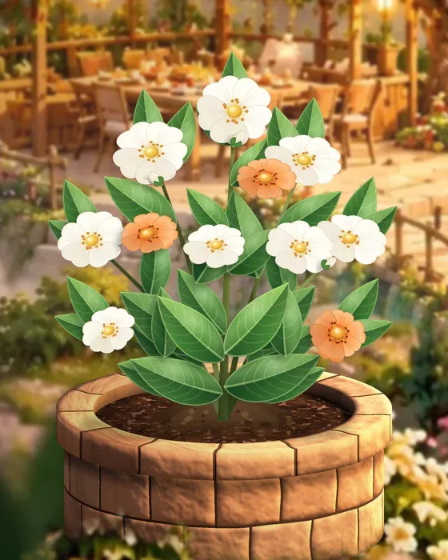

بذر رژیم غذاییه؟
نه. بذر فقط روی غذا یا وزن متمرکز نیست.
بذر برای کم کردن فاصلهی میان دانستن و زندگی کردن آنچه میدانیم به وجود آمده است.
Health × Self-Knowledge × Behavior Change
تنش آشنا
بذر یک پلتفرم Lifestyle و Behavior Change هست که کمک میکنه الگوهای رفتاری، نیازها، عادتها و سبک زندگی خودتون رو بهتر بشناسید و قدمبهقدم مسیر تغییر مخصوص خودتون رو بسازید.
فاصلهی دونستن تا انجام دادن
ولی صرف دونستن، همیشه باعث تغییر نمیشه.
چون خیلی وقتها قبل از اینکه بدونیم «چه کاری باید انجام بدیم»، باید بفهمیم چرا الان اینطوری رفتار میکنیم.
و بذر از همین نقطه شروع میشه:
شناخت.
Know · Be · Become
مسیر هر فرد بر اساس شرایط، رفتارها، نیازها و مرحلهای که در تغییر قرار داره متفاوت طراحی میشه.
خودتان و الگوهایتان را بشناسید.
آگاهانهتر در زندگیتان حضور داشته باشید.
در مسیر تغییر قدم بردارید.
A place to know, to be, to become.
Body · Mind · Soul
مسیر بذر از بدن شروع میشه. از جایی که هر روز باهاش زندگی میکنید: خوابتون، تغذیهتون، حرکتتون، انرژیتون و عادتهای روزمرهتون.
اول باید ببینیم بدنتون الان کجای مسیر ایستاده.
بعد میریم سراغ ذهن. الگوهایی که تکرار میکنید. نیازهایی که پشت رفتارهاتون هستن.
باورها، تصمیمها و عادتهایی که شاید سالهاست بدون اینکه متوجه باشید، دارن مسیرتون رو شکل میدن.
و بعد میرسیم به روح. به چیزی که برای شما معنا داره. ارزشهاتون. رابطهتون با خودتون و زندگی.
و اینکه واقعاً میخواید چه جور آدمی باشید و چه جور زندگیای بسازید.
در بذر، بدن، ذهن و روح سه مسیر جدا از هم نیستن. روی هم اثر میذارن.
گاهی تغییر از خواب و حرکت شروع میشه. گاهی از شناخت یک الگوی قدیمی. و گاهی از این سؤال ساده:
«من واقعاً چی میخوام؟»
قرار نیست همهچیز رو یکباره تغییر بدید. اول خودتون رو میشناسید. بعد چیزی رو انتخاب میکنید که واقعاً برای شما مهمه. و از همونجا، قدمبهقدم مسیرتون رو میسازید.
مسیر شما
برای ما، تغییر از شناخت نقطهای شروع میشه که الان در اون ایستادید.

در مرحلهی اول، بذر کمک میکنه الگوهای تکرارشوندهی خودتون رو ببینید:
با ویسهای آموزشی، تمرینهای کوتاه و ثبت تجربههای روزانه، کمکم تصویر واضحتری از خودتون ساخته میشه.
بعد از شناخت، قرار نیست ده چیز رو با هم تغییر بدید. از بین مهمترین الگوهای زندگیتون، چند اولویت مشخص انتخاب میشن و تغییر از همونها شروع میشه.
قدمهای کوچک. پیگیری مداوم. اصلاح مسیر بر اساس چیزی که واقعاً در زندگی شما اتفاق میافته.
هدف، ساختن مسیریه که با توجه به نیازها، دغدغهها و شرایط زندگی شما طراحی شده؛ تا بتونید تو روزمرهتون بیاریدش و آرومآروم سبک زندگی خودتون رو بسازید.
TTM · Stages of Change
برای اینکه یک تغییر ماندگار بشه، باید بفهمیم هر آدم الان دقیقاً کجای مسیر تغییر ایستاده.
یکی از مدلهایی که در بذر ازش استفاده میکنیم، مدل علمی TTM یا «مراحل تغییر»ه. این مدل میگه همهی آدمها برای تغییر یک رفتار، در یک مرحله نیستن.
Contemplation
ممکنه یک نفر هنوز مطمئن نباشه اصلاً میخواد تغییر کنه.
Preparation
یک نفر آمادهی شروع باشه.
Action
یک نفر شروع کرده باشه ولی نتونه ادامه بده.
Maintenance
و یک نفر درگیر حفظ تغییری باشه که ساخته.
پس منطقی نیست به همه یک توصیهی یکسان بدیم. بذر سعی میکنه مسیر، تمرینها و قدمهای بعدی رو متناسب با مرحلهای که فرد در اون قرار داره طراحی کنه.
در کنار TTM، مسیر بذر با استفاده از دانش و رویکردهایی مثل اینها طراحی میشه:
یعنی قبل از اینکه بذر بهتون بگه «چی کار کنید»، سعی میکنه بفهمه:
علم در بذر قرار نیست تبدیل به اصطلاحات پیچیده بشه. قراره نتیجهش رو در یک مسیر ساده، شخصی و قابل اجرا ببینید.
داخل بذر
ما در حال ساخت یک تجربهی شخصیسازیشده برای تغییر سبک زندگی هستیم. داخل اپ، مسیر با شناخت شروع میشه.
ویس گوش میدید.
تمرین انجام میدید.
احساسات و موقعیتهای مهم رو ثبت میکنید.
الگوها
و به مرور، بذر از این دادهها برای پیدا کردن الگوهای تکرارشوندهی شما استفاده میکنه.
AI در بذر قرار نیست جای انسان تصمیم بگیره. وظیفهش کمک به تحلیل اطلاعات، پیدا کردن الگوها و شخصیتر کردن تجربهی هر کاربره.
We illuminate. You decide.
دورهها




مراحل رشد





سؤالهای شما
نه. بذر فقط روی غذا یا وزن متمرکز نیست.
نه. بذر جایگزین رواندرمانی یا خدمات پزشکی نیست. تمرکز بذر روی Lifestyle Coaching، شناخت رفتار و ایجاد تغییرات قابل اجرا در زندگی روزمره است.
کمک میکنه اطلاعاتی که در طول مسیر ثبت میکنید بهتر تحلیل بشن، الگوهای تکرارشونده شناسایی بشن و تجربهی شخصیتری داشته باشید.
پشت صحنهی بذر
«بذر از یک سؤال برای من شروع شد: چرا ما خیلی وقتها میدونیم چه چیزی برای ما بهتره، اما باز هم نمیتونیم تغییرش بدیم؟»
آیناز، بنیانگذار بذر
همین سؤال باعث شد وارد دنیای Behavior Change، Lifestyle Coaching و علوم مرتبط با تغییر رفتار بشیم.
امروز بذر توسط یک تیم چندتخصصی در حال ساخته شدنه؛ از سلامت و علوم رفتاری تا محصول، فناوری و AI.
ما هنوز در حال ساختیم.